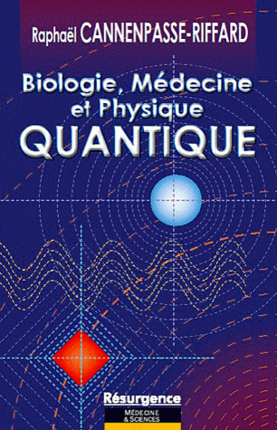
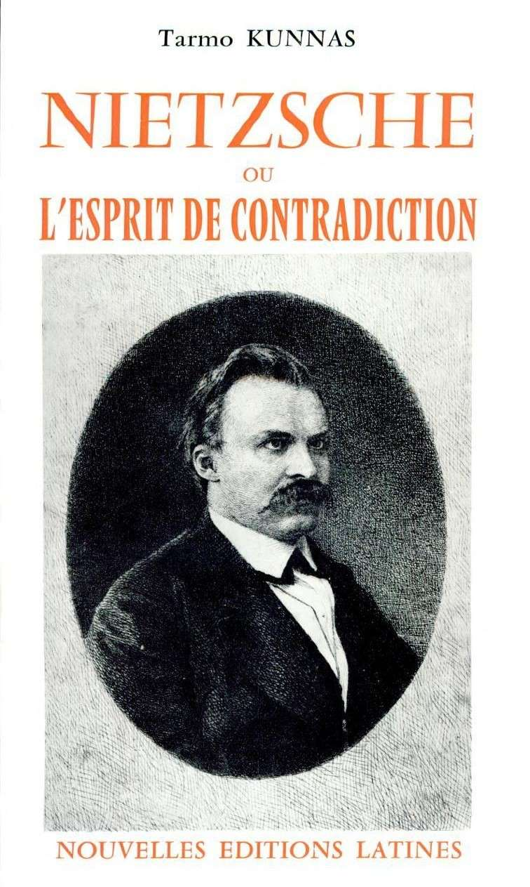

Roman
de l'idée à la diffusion
Qui sommes nous ?
Introduction
Ecrire est une démarche personnelle.
Le fantasme du romancier
Mr. Martin, 40 ans, cadre supérieur dans une grande entreprise.
Une idée géniale pour un livre, mais aucune expérience d'écriture littéraire.
Le rêve d'écrire un livre
Une rêve ancestrale
 Une tradition nationale
1 français sur 6 est un auteur.
Le mythe de la page blanche
100% des auteurs y sont confrontés

100% des auteurs dépassent cette étape.
La rédaction d'un premier livre peut prendre
entre 2 mois à une vie entière
Attention au burnout
La tragédie de la relecture
Les 3 aspects de la relecture
- la corrections orthographiques et grammaticales
- la cohérence du livre
- le style
Les 3 réactions suite à la relecture :
- corriger les fautes
- corriger les fautes et réécrire les passages incohérents
- Réécrire l'intégralité
La traversé du désert de l'édition
Tradition française : Les maisons d'édition
1 auteur sur 8 souhaite être édité chez elle,
seul 1 auteur sur 280 y aboutira
Conseils ?
Persévérer et échanger.
L'édition dans tous ces états
Les maisons d'édition

Compte d'éditeur
- Relecture, finalisation et publication à sa charge
- Revenu de l'auteur : 5 à 10% du prix de vente
- Paradoxe : publie des livres imparfaits, mais n'accepte que des auteurs parfaits
Compte d'auteur
- Relecture, finalisation et impression à la charge de l'auteur
- La maison d'édition se charge de la distribution auprès de son réseau
- Revenu de l'auteur: 10 à 40% du prix de vente
- Pour 1000 livres distribués : 20 000€ d'investissement
Auto publication
- L'auteur est sa propre maison d'édition
- Tout est à sa charge
- Revenu: 70 à 95% du prix de vente - les charges
- Liberté absolue
L'auto-édition

- ISBN par livre : gratuit
- Distribution en ligne (Lulu, Amazon, BookOnDemand)
- Revenu de l'auteur: 90 à 100% du prix de vente